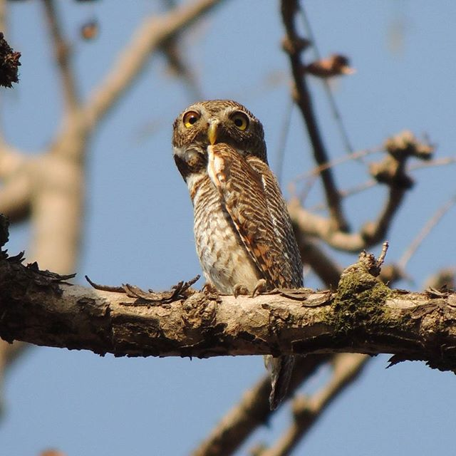
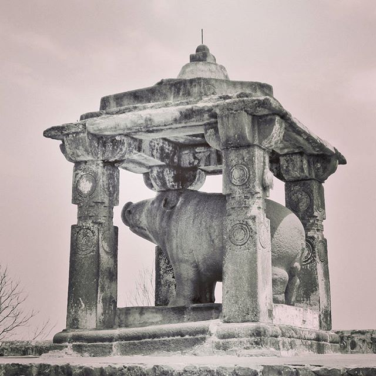
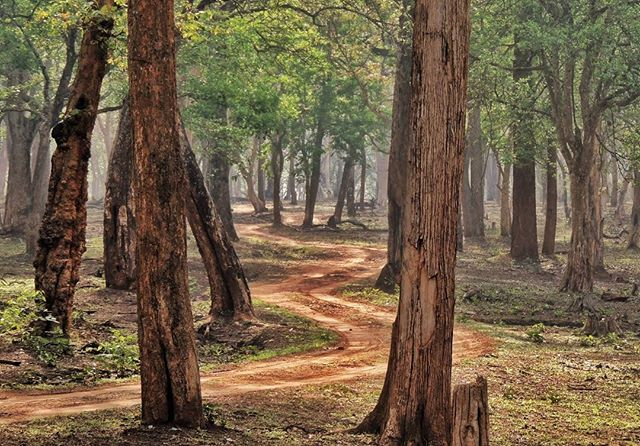

Jungle Owlet. Kanha National Park. We had never seen a Jungle Owlet, and when our guide spotted this one atop a tree, we couldn't see it at all. Until it conveniently moved a couple of times, allowing us to see it, and even click pics. Among all the birds we saw, sporting this one was certainly the most satisfying. #birds #indianbirds #Owlet #jungle #forest #owl #birdsofinstagram #bird #kanha #nationalpark #MadhyaPradesh #India #birdsofindia #wildlife #nature
Tiger. Leopard. Jackal. Barasingha. Gaur. Sambhar. Spotted deer. Wild Boar. Swipe to see all. These are some of the animals we saw on the many safaris within Kanha National Park. And yes. We also saw a Sloth bear, but sorry, no pics. It is fascinating to see the tiger or the Leopard in the wild, but it is just as fascinating to see the other animals too. We saw a Gaur break down a termite hill, and another one out - stared us as we tried to pass him on the road. Monkeys played around spotted deer, and a herd of Barasingha stuck together and forced a tiger to think again and give up attacking them. It is moments like these which make a jaunt into the wild memorable, whether we spot the big cats or not. Since the last few days I have been offline, thanks to the intermittent network here, but you can expect a slew of photographs soon. #Kanha #nationalpark #MadhyaPradesh #India #wildlife #jungle #forest #safari #summertrip #summertrip2017 #wild #animals #deer #tiger #Leopard #Gaur #jackal #boar
Can you spot the jackal in the pic? Hello from Kanha, where we are spending the next few days of our #summertrip2017 Our first jaunt into the jungle wasn't very satisfying. Clubbed with a group of chattering kids and irritating adults, we also just missed seeing about 5 tigers, which added to the frustration. Spotting these jackals was the only consolation, and we did spot a few birds as well. More pics later.... stay tuned for more updates. #Kanha #wildlife #sanctuary #nationalpark #India #MadhyaPradesh #animals #jackals #camouflage #forest #jungle #safari #summertrip
The natural heritage of Bhedaghat. Dhuandhar falls and Marble rocks. Travelling in May, I had been mentally prepared for little or no water in the falls. I was debating whether to even go to see them, when my driver assured me that there was indeed water. We were sceptical, but agreed, and there it was, the Dhuandhar falls in (almost) all its glory. The marble rocks were just as impressive, if not more. And the running commentary of our boatman amused me, and irritated Samhith, because he had seen none of the films the boatman kept talking about which had been filmed here! We spent almost half the day at Bhedaghat, and with the Chausath Yogini temple, it was one memorable visit. We are now at Kanha, and wondering if our experience here will top the ones so far.... Or not.... Fingers crossed. #jabalpur #Bhedaghat #MadhyaPradesh #India #nature #Narmada #river #falls #waterfalls #marble #rocks #Dhuandhar #marblerocks #water #mountain #gorge #summertrip2017 #summertrip
The Chausath Yogini temple, Bhedaghat, near Jabalpur. This is one temple I have yearned to visit, and finally did, this afternoon, during a short jaunt from Jabalpur, en route our final destination for #summertrip2017 The temple, though named for the 64 yoginis, actually has around 94 of them! Swipe to see some of them. The yoginis are so intricately carved, with detailed iconography, which helps identify them. Most of their names are inscribed below them, helping us out. The first two images show the Yoginis in their niches, around the circumference of the temple. The third image shows Varahi, the fourth Sarvatomukhi, the fifth is Erudi, the sixth is Rushini, the seventh is Virendri, holding a sword, and the eighth is Phanendri, with a snake hood. These are just a few of the images in the temple. It was worth braving the scorching sun and the blistering heat of the stones, to see them! @sudhageee and @shubhrachatterji These are especially for you. 😀 #India #MadhyaPradesh #jabalpur #bhedaghat #yoginis #temples #heritage #stone #sculptures #art #IndianArt #IndianAesthetics #incredibleindia #summertrip
Our #summertrip2017 begins with a short stay at Nagpur, and a visit to a few heritage sites nearby. Swipe to see all the images. We started the day at Ramtek, visiting the temple to Lord Ram, as well as the Jain temple. The surprise was the beautiful varaha of whom I posted a pic earlier as well. We then stopped to see the site of the massive temple at Mansar, and then headed to Adasa, where the Ganesha was so cute. However, it was sad to see massive sculptures either covered with sindoor, or lying around, broken and ignored. There is so much to see here, and we barely managed to skim the surface, braving the scorching summer sun to see what we could. Meanwhile, it has also been a good experience to stay in one of the retiring rooms at the station, as we await our train to our next destination. The last pic shows the corridor just outside our room. Pretty good isn't it? #Nagpur #Maharashtra #India #railways #trains #station #IndianRailways #heritage #sculptures #temples #Hindu #Jain #varaha #archaeology #architecture #incredibleindia

Look who we saw at Ramtek, near Nagpur. We have been fascinated by Varahas, ever since @sudhageee bought a book on all the Varahas in madhya pradesh. Our favourite is the one at Khajuraho, but we are happy to see him anywhere. And since we didn't know about the presence of this one, near the temple in the fort at Ramtek, it made our day! #heritage #varaha #FormsOfVishnu #Ramtek #Nagpur #Maharashtra #India #temple #sculpture #stone #summertrip2017 #summertrip

Setting out on a new journey. One which will lead us once more into the forests, albeit a new one, with a few stops for admiring the built heritage of our country as well. Stay tuned to join me, as i explore a bit more of our natural and monumental heritage. #summertrip #summertrip2017 #India #travel #journey #heritage #nature #wildlife #monument
Bought a pile of @tulikabooks and @pratham.books for a friend yesterday. Such a pleasure it was, to pick from such a variety of books, to find the perfect ones. There was a time when I bought so many of these for my son. Which is why, when a friend asked, I volunteered at once, to pick some for her. 😀 It was so wonderful to see all the new books. And of course I ended up buying more than I intended to. These are just a few, which fit into the frame 😜 Keep up the good work, people and keep coming up with even more titles. #books #children #kids #picturebooks #India #English #hindi #marathi #bookstagram
![Tiger. Leopard. Jackal. Barasingha. Gaur. Sambhar. Spotted deer. Wild Boar. Swipe to see all.
These are some of the animals we saw on the many safaris within Kanha National Park. And yes. We also saw a Sloth bear, but sorry, no pics.
It is fascinating to see the tiger or the Leopard in the wild, but it is just as fascinating to see the other animals too.
We saw a Gaur break down a termite hill, and another one out - stared us as we tried to pass him on the road. Monkeys played around spotted deer, and a herd of Barasingha stuck together and forced a tiger to think again and give up attacking them.
It is moments like these which make a jaunt into the wild memorable, whether we spot the big cats or not.
Since the last few days I have been offline, thanks to the intermittent network here, but you can expect a slew of photographs soon.
#Kanha #nationalpark
#MadhyaPradesh
#India #wildlife #jungle #forest #safari #summertrip #summertrip2017 #wild #animals #deer #tiger #Leopard #Gaur #jackal #boar](ab082db7b379597f9316152d619c6fac_data/18299241_757928414376217_7722719719286898688_n.jpg)
![Can you spot the jackal in the pic?
Hello from Kanha, where we are spending the next few days of our #summertrip2017
Our first jaunt into the jungle wasn't very satisfying. Clubbed with a group of chattering kids and irritating adults, we also just missed seeing about 5 tigers, which added to the frustration. Spotting these jackals was the only consolation, and we did spot a few birds as well. More pics later.... stay tuned for more updates.
#Kanha #wildlife #sanctuary #nationalpark #India #MadhyaPradesh #animals #jackals #camouflage #forest #jungle #safari #summertrip](ab082db7b379597f9316152d619c6fac_data/18299484_240122979725015_2212587419402764288_n.jpg)
![The natural heritage of Bhedaghat. Dhuandhar falls and Marble rocks.
Travelling in May, I had been mentally prepared for little or no water in the falls. I was debating whether to even go to see them, when my driver assured me that there was indeed water. We were sceptical, but agreed, and there it was, the Dhuandhar falls in (almost) all its glory.
The marble rocks were just as impressive, if not more. And the running commentary of our boatman amused me, and irritated Samhith, because he had seen none of the films the boatman kept talking about which had been filmed here!
We spent almost half the day at Bhedaghat, and with the Chausath Yogini temple, it was one memorable visit.
We are now at Kanha, and wondering if our experience here will top the ones so far.... Or not.... Fingers crossed.
#jabalpur #Bhedaghat #MadhyaPradesh #India #nature #Narmada #river #falls #waterfalls #marble #rocks #Dhuandhar #marblerocks #water #mountain #gorge #summertrip2017 #summertrip](ab082db7b379597f9316152d619c6fac_data/18252570_180827109106615_1345540943767404544_n.jpg)
![The Chausath Yogini temple, Bhedaghat, near Jabalpur.
This is one temple I have yearned to visit, and finally did, this afternoon, during a short jaunt from Jabalpur, en route our final destination for #summertrip2017
The temple, though named for the 64 yoginis, actually has around 94 of them! Swipe to see some of them.
The yoginis are so intricately carved, with detailed iconography, which helps identify them. Most of their names are inscribed below them, helping us out.
The first two images show the Yoginis in their niches, around the circumference of the temple. The third image shows Varahi, the fourth Sarvatomukhi, the fifth is Erudi, the sixth is Rushini, the seventh is Virendri, holding a sword, and the eighth is Phanendri, with a snake hood.
These are just a few of the images in the temple. It was worth braving the scorching sun and the blistering heat of the stones, to see them!
@sudhageee and @shubhrachatterji
These are especially for you. 😀
#India #MadhyaPradesh #jabalpur #bhedaghat #yoginis #temples #heritage #stone #sculptures #art #IndianArt #IndianAesthetics #incredibleindia #summertrip](ab082db7b379597f9316152d619c6fac_data/18161830_471394073206493_1871915986488131584_n.jpg)
![Our #summertrip2017 begins with a short stay at Nagpur, and a visit to a few heritage sites nearby.
Swipe to see all the images.
We started the day at Ramtek, visiting the temple to Lord Ram, as well as the Jain temple. The surprise was the beautiful varaha of whom I posted a pic earlier as well.
We then stopped to see the site of the massive temple at Mansar, and then headed to Adasa, where the Ganesha was so cute. However, it was sad to see massive sculptures either covered with sindoor, or lying around, broken and ignored.
There is so much to see here, and we barely managed to skim the surface, braving the scorching summer sun to see what we could.
Meanwhile, it has also been a good experience to stay in one of the retiring rooms at the station, as we await our train to our next destination. The last pic shows the corridor just outside our room. Pretty good isn't it?
#Nagpur #Maharashtra
#India #railways #trains #station #IndianRailways
#heritage #sculptures #temples #Hindu #Jain #varaha #archaeology #architecture #incredibleindia](ab082db7b379597f9316152d619c6fac_data/18251679_1920791264868150_2380972956567207936_n.jpg)
![Bought a pile of @tulikabooks and @pratham.books for a friend yesterday.
Such a pleasure it was, to pick from such a variety of books, to find the perfect ones. There was a time when I bought so many of these for my son. Which is why, when a friend asked, I volunteered at once, to pick some for her. 😀
It was so wonderful to see all the new books. And of course I ended up buying more than I intended to. These are just a few, which fit into the frame 😜
Keep up the good work, people and keep coming up with even more titles.
#books #children #kids #picturebooks #India #English #hindi #marathi #bookstagram](ab082db7b379597f9316152d619c6fac_data/18011996_123956931487389_9153446142460035072_n.jpg)